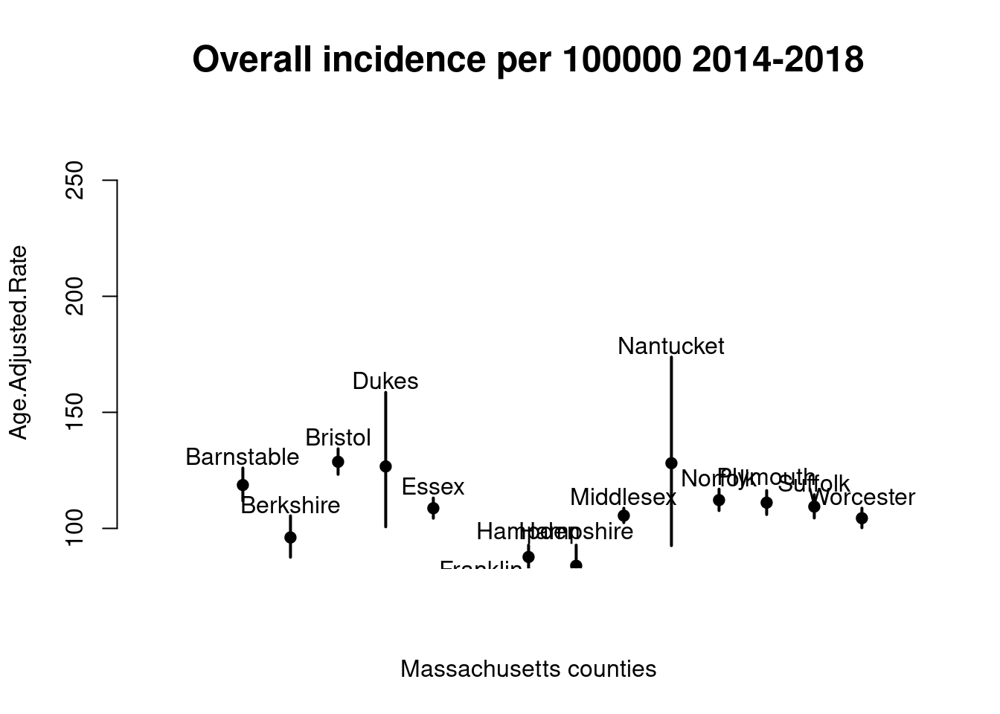

data(us_county_geo)
us_county_geo |> select(state, county, geometry) |> head()
## Simple feature collection with 6 features and 2 fields
## Geometry type: POINT
## Dimension: XY
## Bounding box: xmin: -87.74607 ymin: 30.65922 xmax: -85.4051 ymax: 33.97736
## CRS: NA
## # A tibble: 6 × 3
## state county geometry
## <chr> <chr> <POINT>
## 1 AL Autauga County (-86.64644 32.53224)
## 2 AL Baldwin County (-87.74607 30.65922)
## 3 AL Barbour County (-85.4051 31.87025)
## 4 AL Bibb County (-87.12715 33.01589)
## 5 AL Blount County (-86.56644 33.97736)
## 6 AL Bullock County (-85.71726 32.10176)2 Mapping cancer rates
2.1 Cancer across the globe
2.1.1 Interactive cancer maps
- Twenty years ago the most common Geographic Information System was the paper map or road atlas
- Now our cell-phones can ask the internet how to get to where we want to go, efficiently
- Understanding how cancer events unfold in different geographic regions is important for public health
- Are there important environmental hazards at specific locations?
- Are there clues to genetic origins of particular cancers?
- Are culturally shared behaviors leading to increased risk?
- Even though we are comfortable with annotated maps, creating and using “cancer maps” to reason about cancer risk requires some training
- In this notebook we will work with some interactive maps on the web, and we will produce some maps using R programming
A basic concern in mapping cancer rates is discovery of “clusters”. A review of cancer cluster investigations was published in 2012. Results:
We reviewed 428 investigations evaluating 567 cancers of concern. An increase in incidence was confirmed for 72 (13%) cancer categories (including the category “all sites”). Three of those were linked (with variable degree of certainty) to hypothesized exposures, but only one investigation revealed a clear cause.
The conclusion of this report:
There are fundamental shortcomings to our current methods of investigating community cancer clusters. We recommend a multidisciplinary national dialogue on creative, innovative approaches to understanding when and why cancer and other chronic diseases cluster in space and time.
This motivates us to learn about map production and rate estimation in YES for CURE.
2.1.2 Exercises
Use the International Agency for Research on Cancer (IARC) map tool to survey mortality from cancer in 2020 for individuals aged 10-24. You should see something like the display below.

B.1.1 True or False: Age standardized mortality from cancer in 2020 for persons aged 10-24 is greater in Vietnam than in neighboring countries.
Use the IARC map tool to produce a worldwide map of breast cancer incidence for women aged 60-79.
B.1.2 What is the Scandinavian country with largest estimate of age-standardized breast cancer incidence for women aged 60-79?
2.2 Enhancing tables with geography
2.2.1 Basic geographic data about US counties
The coordinates of central locations in US counties are provided in us_county_geo.
Coordinates for metropolitan statistical areas are provided by “statcrunch”:
data(statcrunch_msa)
head(statcrunch_msa)
## rank msa pop2013 pop2020
## 1 1 New York-Newark-Jersey City, NY-NJ-PA 19949502 19567410
## 2 2 Los Angeles-Long Beach-Anaheim, CA 13131431 12828837
## 3 3 Chicago-Naperville-Elgin, IL-IN-WI 9537289 9461105
## 4 4 Dallas-Fort Worth-Arlington, TX 6810913 6426214
## 5 5 Houston-The Woodlands-Sugar Land, TX 6313158 5920416
## 6 6 Philadelphia-Camden-Wilmington, PA-NJ-DE-MD 6034678 5965343
## changepct changecat lat lng
## 1 1.95 0 to 5 40.71278 -74.00594
## 2 2.36 0 to 5 34.05223 -118.24368
## 3 0.81 0 to 5 41.87811 -87.62980
## 4 5.99 5 to 10 32.78014 -96.80045
## 5 6.63 5 to 10 29.76019 -95.36939
## 6 1.16 0 to 5 39.95233 -75.16379This geographic data has already been used to enhance the CDC incidence data in woncan:
data(woncan)
woncan |> group_by(MSA) |>
summarize(lat=head(lat)[1], lng=head(lng)[1]) |> head()
## # A tibble: 6 × 3
## MSA lat lng
## <chr> <dbl> <dbl>
## 1 Akron, OH 41.1 -81.5
## 2 Albany-Schenectady-Troy, NY 42.7 -73.8
## 3 Albuquerque, NM 35.1 -107.
## 4 Allentown-Bethlehem-Easton, PA-NJ 40.6 -75.5
## 5 Atlanta-Sandy Springs-Roswell, GA 33.7 -84.4
## 6 Augusta-Richmond County, GA-SC 33.5 -82.02.2.2 Exercise
B.2.1 Create a new notebook cell and run YESCDS::table_woncan("Prostate")
B.2.2 Use this table to find the latitude and longitude of Boston.
2.3 An interactive map of the US with cancer rates
After combining cancer rate data for a collection of cancer types and metropolitan statistical areas, we can produce a map showing variation in cancer incidence over the United States. Here is the example for stomach cancer:
cancer_map_usa(site="Stomach")2.3.1 Exercise
B.2.3 Create a new notebook cell and run cancer_map_usa(site="Prostate", scaling=0.05)
B.2.4 Can you identify the area with the highest incidence of prostate cancer?
2.4 A data graphic
Finally, to get a different view of variation in cancer rates across the United States, run a cell with the following command. Geographic location is lost, but the range of variation, and details of variation can be seen very clearly in these displays.
browseURL("https://vjcitn.shinyapps.io/ratevariation")2.4.1 Exercise
B.2.5 Change the body site to “Pancreas” (remove “Brain”) and find, using the histogram tab, the areas with highest and lowest age-adjusted rates of pancreatic cancer.
2.5 Cancer in our counties
2.5.1 Cancer rates in Massachusetts counties, tabulated
datatable(MA_cancer_rate_table())2.5.2 Mapping the rates
mass_cancer_map()2.6 Addressing uncertainty in the rates
The reported rates are statistics collected over time and are adjusted using a model for age distribution in the US. The counts on which the reported rates are imprecise. Therefore “confidence limits” are produced with the rate estimates.
Here are the prostate cancer rates in Massachusetts counties, plotted with confidence limits.
plotwci(MA_cancer_rate_table("prostate"), ylim=c(90,270))
One message from this display is that prostate cancer in Nantucket county has an estimated age-adjusted incidence in 2014-2018 of about 200 cases per 100000 men, but the actual rate may be lower or higher. The uncertainty of the estimate arises from the relatively small population of Nantucket county.
2.7 Exercises
B.3.1 What are the reported population sizes for Middlesex and Nantucket counties?
B.3.2 Run the following chunk to produce a different representation of incidence rates for cancers of lung and bronchus in California counties:
ordered_seg_cal()Two statistics are presented for the US as a whole and for the entire state of California.
B.3.3 True or False: We are fairly confident that the incidence of cancers of lung and bronchus in San Joaquin county is lower than that of the US as a whole.
The midpoint of the plotted interval is the estimated incidence rate.
B.3.4 Which California counties have incidence rates that are around half that of the US as a whole?